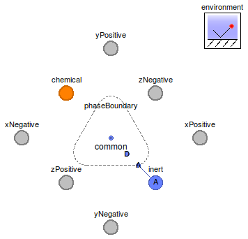

Table of Contents
- User's Guide
- BCs
- Sensors
- Assemblies
- Regions
- Subregions
- Connectors
- Characteristics
- Units
- Quantities
- BaseClasses
Download
- Latest: FCSys-2.0.zip (**Please check back soon or contact kdavies4 at gmail.com.)

| Name | Description |
|---|---|
| Model for a phase with no species or reactions |
 FCSys.Subregions.Phases.BaseClasses.NullPhase
FCSys.Subregions.Phases.BaseClasses.NullPhase
If one of the species has setTemp = true, then
initTemp should be set to false.
Likewise, if one of the species has setVelX = true,
setVelY = true, or setVelZ = true, then
initVelX, initVelY, or initVelZ should
be set to false (respectively).
Assumptions:
Notes:
| Type | Name | Default | Description |
|---|---|---|---|
| Geometry | |||
| NumberAbsolute | k[3] | {1,1,1} | Area fill factor for transport (k) [1] |
| Assumptions | |||
| Boolean | reduceVel | true | Same velocity for all species |
| Boolean | reduceTemp | true | Same temperature for all species |
| Boolean | inclLin[3] | {true,false,false} | true, if each component of linear momentum is included |
| Initialization | |||
| Velocity | |||
| Boolean | initVelX | true | Initialize the x component |
| Boolean | initVelY | true | Initialize the y component |
| Boolean | initVelZ | true | Initialize the z component |
| Velocity | phi_IC[Axis] | {0,0,0} | Initial velocity (φIC) [l/T] |
| Temperature | |||
| Boolean | initTemp | true | Initialize |
| TemperatureAbsolute | T_IC | Initial temperature (TIC) | |
| Type | Name | Description |
|---|---|---|
| InertAmagat | inert | |
| FaceBus | xNegative | Negative face along the x axis |
| FaceBus | xPositive | Positive face along the x axis |
| FaceBus | yNegative | Negative face along the y axis |
| FaceBus | yPositive | Positive face along the y axis |
| FaceBus | zNegative | Negative face along the z axis |
| FaceBus | zPositive | Positive face along the z axis |
model NullPhase "Model for a phase with no species or reactions" //extends FCSys.BaseClasses.Icons.Names.Middle; // Geometric parameters parameter Q.NumberAbsolute k[3]( each min=Modelica.Constants.small, each final nominal=1) = {1,1,1} "Area fill factor for transport (k)"; outer parameter Q.Length L[Axis](each final min=Modelica.Constants.small) "Length"; outer parameter Q.Area A[Axis] "Cross-sectional area"; // Assumptions parameter Boolean reduceVel=true "Same velocity for all species"; parameter Boolean reduceTemp=true "Same temperature for all species"; // Initialization parameter Boolean initVelX=true "Initialize the x component"; parameter Boolean initVelY=true "Initialize the y component"; parameter Boolean initVelZ=true "Initialize the z component"; parameter Q.Velocity phi_IC[Axis]={0,0,0} "Initial velocity (φIC)"; // This is always enabled in the dialog since it's used as a guess value. parameter Boolean initTemp=true "Initialize"; parameter Q.TemperatureAbsolute T_IC(nominal=298.15*U.K,start=environment.T) "Initial temperature (TIC)"; // This is always enabled in the dialog since it's used as a guess value. parameter Boolean inclLin[3]={true,false,false} "true, if each component of linear momentum is included";FCSys.Connectors.InertAmagat inert(final n_lin=n_lin) if n_spec > 0; FCSys.Connectors.FaceBus xNegative if n_spec > 0 "Negative face along the x axis"; FCSys.Connectors.FaceBus xPositive if n_spec > 0 "Positive face along the x axis"; FCSys.Connectors.FaceBus yNegative if n_spec > 0 "Negative face along the y axis"; FCSys.Connectors.FaceBus yPositive if n_spec > 0 "Positive face along the y axis"; FCSys.Connectors.FaceBus zNegative if n_spec > 0 "Negative face along the z axis"; FCSys.Connectors.FaceBus zPositive if n_spec > 0 "Positive face along the z axis"; PhaseBoundary phaseBoundary(final n_lin=n_lin) if n_spec > 0 "Phase boundary"; // This component is conditional because if two or more empty phases // (without any species included) were connected within a subregion, there // would be a mathematical singularity. protected parameter Integer n_spec "Number of species"; final parameter Integer n_lin=countTrue(inclLin) "Number of components of linear momentum"; final parameter Integer cartAxes[n_lin]=index(inclLin) "Cartesian-axis indices of the axes of linear momentum";FCSys.Connectors.InertInternal common( n_lin=n_lin, final uniformVelocity=reduceVel, final isothermal=reduceTemp, mechanical(phi( each stateSelect=StateSelect.prefer, final start=phi_IC[cartAxes], fixed={initVelX,initVelY,initVelZ}[cartAxes])), thermal(T( stateSelect=StateSelect.prefer, final start=T_IC, final fixed=initTemp))) if n_spec > 0 "Internal connector to directly couple velocities and/or temperatures"; outer BCs.Environment environment "Environmental settings"; equation // Inert interactionsconnect(phaseBoundary.inertA, inert); end NullPhase;